측량및지형공간정보기사 (2014-03-02 기출문제)
1과목: 측지학 및 위성측위시스템
1. GNSS 측량시 측위정확도에 영향을 주지 않는 것은?
- 기선 길이
- 수신기의 안테나 높이
- 가시위성(visible satellite)
- 위성의 기하학적 배치
(정답률: 76%)

2. 다음 중 측지위도에 대한 설명으로 옳은 것은?
- 지구상 한 점에서 타원체에 대한 법선이 적도면과 이루는 각
- 지구상 한 점과 지구 중심점을 잇는 직선이 적도면과 이루는 각
- 지구상 한 점에서 지오이드에 대한 연직선이 적도면과 이루는 각
- 본초자오면과 지표상 한 점을 지나는 자오면이 만드는 적도면상 각거리
(정답률: 55%)
3. UPS 좌표에 대한 설명 중 틀린 것은?
- 지구의 양극지역, 좌표를 표시하는 데 사용한다.
- UPS 좌표는 극심입체투영법에 의한 것이다.
- 지심을 원점으로 하는 3차원 직교좌표계를 사용한다.
- 지구의 양극을 원점으로 하는 좌표계이다.
(정답률: 62%)
4. GPS에서 전송되는 L2대의 신호주파수가 1,227.60MHz일 때 L2 신호 300,000파장의 거리는? (단, 광속(c)=299,792,458m/s이다.)
- 36,803m
- 36,828m
- 73,263m
- 122,8450m
(정답률: 61%)
5. 중력 및 중력장에 관한 설명으로 옳지 않은 것은?
- 중력은 만유인력에 의한 힘과 지구자전에 의한 원심력의 합력으로 나타난다.
- 중력의 크기는 적도지방이 극지방보다 크다.
- 중력은 단위질량에 작용하는 힘이다.
- 중력장 내에서 같은 점에 위치하는 모든 질량체는 같은 중력값(중력가속도)을 갖게 된다.
(정답률: 71%)
6. 지오이드와 타원체면과의 거리를 무엇이라 하는가?
- 표고
- 정표고
- 타원체고
- 지오이드고
(정답률: 68%)
7. 측량 시 지구의 곡률을 고려하지 않을 경우에 허용오차가 1 : 105이면 반지름을 최대 몇 km까지 평면으로 볼 수 있는가? (단, 지구반지름은 6,400km로 가정한다.)
- 약 11km
- 약 22km
- 약 35km
- 약 45km
(정답률: 58%)
8. 지오이드에 대한 설명 중 틀린 것은?
- 지오이드의 형상은 수학적 타원체로 정의될 수 있다.
- 지오이드에서는 중력의 크기가 동일하다.
- 지오이드 접선에 직각은 중력 방향이다.
- 지오이드는 정표고를 나타내는 기준면이다.
(정답률: 65%)
9. 다음 중 RINEX 파일에 대한 설명 중 틀린 것은?
- RINEX는 GNSS 수신기 기종에 따라 기록방식이 달라 이를 통일하기 위해 만든 표준파일형식이다.
- 헤더부분에는 관측점명, 안테나 높이, 관측날짜, 수신기명 등 파일에 대한 정보가 들어간다.
- RINEX 파일로 변환하였을 경우 자료처리의 신뢰도를 높이기 위해 사용자가 편집 못하도록 해 놓았다.
- 반송파, 코드신호를 모두 기록한다.
(정답률: 81%)
10. 석유탐사의 주요 방법으로 일반적으로 지표면으로부터 깊은 곳의 탐사에 적합한 탄성파 측정방법은?
- 굴절법
- 반사법
- 굴착법
- 충격법
(정답률: 79%)
11. 위성측량에서 위성의 궤도와 임의 시각의 궤도상의 위치를 결정할 수 있는 위성궤도요소가 아닌 것은?
- 승교점(ascending)의 적위
- 궤도 이심률(eccentricity)
- 궤도 장반경의 제곱근
- 궤도 경사각
(정답률: 54%)
12. 구면 삼각형 면적을 5,210km2, 지구의 곡률반지름을 6,370km라고 할 때 구과량은?
- 7″
- 16″
- 23″
- 26″
(정답률: 69%)
13. 해수면의 높이 변화를 측정하기 위하여 위성고도계에서 관측하는 관측치는?
- 위성에서 송신한 신호가 해수면에 반사되어 돌아오는 시간
- 위성과 해상의 목표물과의 거리
- 위성과 해상의 목표물과의 각도
- 위성에서 촬영하는 영상
(정답률: 75%)
14. GNSS 측량에서 수평측위정밀도와 관련되는 위성의 기하학적 배치는 다음 중 어느 것인가?
- PDOP
- TDOP
- HDOP
- VDOP
(정답률: 81%)
15. GNSS 위성측위에서 3차원 위치결정에 필요한 최소 위성수는 몇 개인가?
- 1개
- 2개
- 3개
- 4개
(정답률: 71%)
16. GNSS 간섭측위방법 중 위성 시계오차와 수신기 시계오차를 상쇄시킬 수 있고 관측시간이 길지만 모호정수(cycle ambiguity)가 소거될 수 있는 반송파 위상조합방법은?
- 위성간일중위상
- 수신기간일중위상차
- 이중위상차
- 삼중위상차
(정답률: 81%)
17. 중력이상에 관한 설명으로 옳지 않은 것은?
- 중력이상이란 보정된 기준면의 중력값과 표준중력의 차를 말한다.
- 밀도가 큰 물질이 지하에 있을 때는 음(-) 값을 갖는다.
- 중력이상의 주된 원인은 지하의 밀도가 고르게 분포되어 있지 않기 때문이다.
- 중력이상을 해석함으로써 지하 구조나 지하 광물체의 탐사에 이용된다.
(정답률: 82%)
18. 지구의 자전으로 인한 현상에 대한 설명으로 틀린 것은?
- 운송하는 물체에 전향력이 생긴다.
- 북반구에서는 자유낙체가 동편한다.
- 조석이 하루에 두 번씩 일어난다.
- 인공위성의 궤도가 동편한다.
(정답률: 65%)
19. GNSS(Global Navigation Satellite System) 측량에 대한 설명으로 옳지 않은 것은?
- GNSS 측량은 관측 가능한 기상 및 시간의 제약이 매우 적다.
- 도심지 내 GNSS 측량에서는 멀티패스에 주의해야 한다.
- GNSS 측량에서는 3차원 좌표값을 직접 얻기 때문에 안테나 높이를 관측할 필요가 없다.
- GNSS 측량에서는 수신점 간의 시통이 없어도 기선 벡터(거리와 방향)를 구할 수 있으므로 시통을 염려할 필요가 없다.
(정답률: 73%)
20. 지자기의 3요소에 해당되지 않는 것은?
- 편각
- 수직각
- 복각
- 수평분력
(정답률: 82%)
2과목: 응용측량
21. 경관의 구성 요소에 해당되지 않는 것은?
- 인식 대상이 되는 사물(대상계)
- 그들을 둘러싼 환경(경관장계)
- 인식 주체인 시점(시점계)
- 사물 인식의 정도(감각계)
(정답률: 61%)
22. 시설물 측량의 교량측량에서 말뚝설치측량, 우물설치측량, 형틀설치측량을 무엇이라 하는가?
- 기준점 측량
- 상부구조물측량
- 하부구조물측량
- 유지관리측량
(정답률: 59%)
23. 수면으로부터 수심 H인 하천에서 2점법으로 평균 유속을 구할 경우, 유속의 관측지점은?
- 수면으로부터 0.2H, 0.8H인 지점
- 수면으로부터 0.4H, 0.8H인 지점
- 수면으로부터 0.2H, 0.6H인 지점
- 수면으로부터 0.4H, 0.6H인 지점
(정답률: 66%)
24. 상향기울기 4/1000와 하향기울기 3/1000의 두 직선에 반지름 500m인 종단곡선을 설치할 때, 곡선시점에서 20m 떨어져 있는 지점의 종거 y의 값은?
- 0.2m
- 0.4m
- 0.6m
- 0.8m
(정답률: 38%)
25. 터널 내의 곡선설치법으로 부적합한 것은?
- 외접다각형법
- 중앙종거법
- 내접다각형법
- 현편거법
(정답률: 50%)
26. 그림과 같이 등고선 간격이 5m이고, 각 등고선으로 둘러싸인 면적이 표와 같을 때 195m 등고선 위의 토량을 평균단면법으로 구한 값은? (단, 정상은 평평한 것으로 가정한다.)
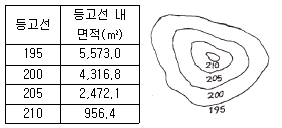
- 20,000.8m3
- 25,134.0m3
- 33,295.8m3
- 50,268.0m3
(정답률: 31%)
27. 수로가 비교적 직선이고 단면적도 규칙적이며 하상이 평평한 상태에서의 평균유속에 대한 설명으로 옳은 것은?
- 하상의 표면에 상관없이 평균유속의 위치는 같다.
- 일반적으로 평균유속의 위치는 수심(H)의 0.2H~ 0.3H 사이에 존재한다.
- 하상의 표면이 조잡할수록 평균유속의 위치는 낮아지고 평활할수록 높아진다.
- 수면으로부터 평균유속까지의 깊이는 수심과 하천폭의 비가 증가함에 따라서 커진다.
(정답률: 62%)
28. 그림의 면적을 심프슨 제2법칙을 이용하여 구한 값은? (단, 지거의 간격은 5m로 일정하다.)
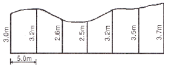
- 90.25m2
- 92.25m2
- 94.25m2
- 96.25m2
(정답률: 53%)
29. 그림과 같은 배수로의 배수단면적 계산공식은?
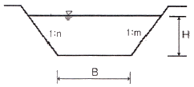
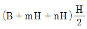
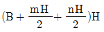
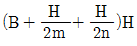
- (B+mH+nH)H
(정답률: 54%)
30. 교각 60°, 곡선반지름 100m의 원곡선에서 이 원곡선의 시점을 움직이지 않고 교점에서 교각을 100°로 증가시켜 새로운 원곡선을 설치할 때, 접선길이의 변화가 없다면 새로운 원곡선의 반지름은?
- 48.45m
- 57.74m
- 145.34m
- 173.21m
(정답률: 43%)
31. 그림과 같은 노선 단면에서 여유폭을 포함하는 용지의 폭은? (단, 여유폭=0.5m로 한다.)
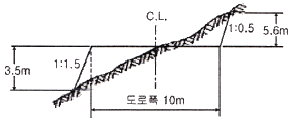
- 18.⑤m
- 19.⑤m
- 23.53m
- 24.53m
(정답률: 50%)
32. 매개변수(A)=60m의 클로소이드 곡선에서 클로소이드 시점에서 곡선의 길이 40m인 점의 곡선반지름은?
- 30m
- 60m
- 90m
- 180m
(정답률: 63%)
33. 그림과 같은 삼각형의 꼭지점 A로부터 밑변을 향해서 직선으로 a : b : c=5 : 3 : 2의 비율로 면적을 분할하기 위한 BP, PQ의 거리는? (단, BC=150m)
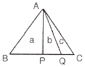
- BP=67.5m, PQ=80m
- BP=75m, PQ=45m
- BP=88.9m, PQ=80m
- BP=88.9m, PQ=67.5m
(정답률: 53%)
34. 100m2의 정사각형 토지의 면적을 1m2까지 정확하게 구하기 위한 필요 충분한 1변의 길이 측정의 단위는?
- 5mm
- 1cm
- 5cm
- 10cm
(정답률: 45%)
35. 하나의 터널을 완성하기 위해서는 계획, 설계, 시공 등의 작업과정을 거쳐야 하는데 다음 중 터널 외 기준점 설치 후 터널의 시공과정 중에 이루어지는 측량은?
- 터널 내 측량
- 터널 외 기준점측량
- 세부측량
- 지형측량
(정답률: 50%)
36. 노선측량의 순서로 옳은 것은?
- 답사 → 예측 → 실측 → 공사측량 → 도상계획
- 도상계획 → 실측 → 예측 → 답사 → 공사측량
- 도상계획 → 답사 → 예측 → 실측 → 공사측량
- 답사 → 도상계획 → 실측 → 예측 → 공사측량
(정답률: 63%)
37. 터널측량에서 측점의 위치가 표와 같을 경우 터널 내 곡선의 교각은?
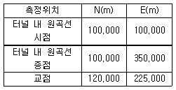
- 18°10′50″
- 28°15′45″
- 48°10′50″
- 71°50′10″
(정답률: 37%)
38. 캔트가 C인 원곡선에서 설계속도 및 곡선반지름을 모두 2배로 증가시킬 때, 새로운 캔트 C'는?
- C/2
- C
- 2C
- 4C
(정답률: 68%)
39. 하구 심천측량에 관한 설명으로 옳지 않은 것은?
- 하구 심천측량은 하구 부근 하저 및 해저의 지형을 조사한다.
- 하구의 항만시설, 해안보전시설의 설계 자료로 사용된다.
- 조위를 관측하고 실측한 수심을 기본수준면으로부터의 수심으로 보정하여 심천측량의 정확도를 높인다.
- 해안에서는 수심 100m 되는 앞바다까지를 측량구역으로 한다.
(정답률: 45%)
40. 하천의 심천측량을 하기 위해 그림과 같이 AB선에 직각으로 기선 AD=60m를 관측하였다. 현재 P의 위치에서 관측장비를 사용하여 ∠APD=40°를 측정하였다면 AP의 거리는?
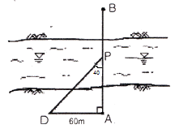
- 71.5m
- 80.5m
- 90.2m
- 95.5m
(정답률: 50%)
3과목: 사진측량 및 원격탐사
41. 사람이 두 눈으로 물체를 볼 때 멀리 볼 수 있는 수렴각의 최소한계를 20″이라 하고, 안기선장(eye base)을 65mm라 하면 원근감을 느낄 수 있는 최대한의 거리는?
- 670m
- 560m
- 450m
- 185m
(정답률: 50%)
42. 편위수정기로 항공사진을 해석적인 방법에 의하여 편위수정할 때 필요한 최소 기준점의 개수는?
- 1
- 4
- 6
- 9
(정답률: 41%)
43. 상호표정에 대한 설명으로 옳지 않은 것은?
- 절대표정과는 독립적인 표정으로 상호 영향이 없다.
- 일반적으로 내부표정 후에 작업이 이루어진다.
- 인자는 by, bz, k, ø, ω이다.
- 종시차를 소거시키는 작업이다.
(정답률: 52%)
44. 수치사진측량기법으로 DEM(Digital Elevation Model)을 자동으로 생성하려고 할 때, 다음 중 가장 적합한 영상은?
- 정사영상
- 에피폴라 영상
- 경사영상
- 모자이크 영상
(정답률: 45%)
45. 다음의 항공삼각측량(aerial triangulation)의 오차조정 방법 중 가장 능률적이고 정밀한 것은?
- 최소 제곱법
- 스트립 조정(strip adjustment)
- 기계적 블록 조정 (analogue block adjustment)
- 해석적 블록 조정(analytical block adjustment)
(정답률: 40%)
46. 촬영고도 2,000m에서 촬영한 사진 I의 주점기선길이는 59mm, 사진 II의 주점기선길이는 61mm일 때 시차차 3.0mm인 건물의 높이는?
- 95m
- 85m
- 100m
- 65m
(정답률: 56%)
47. 다음 전자파의 파장대 중 육지와 수역(물)의 구분이 가장 잘 구분되는 파장대는?
- 녹색 파장대
- 적색 파장대
- 청색 파장대
- 근적외선 파장대
(정답률: 49%)
48. 사진측량의 특징에 대한 설명으로 틀린 것은?
- 기상조건에 영향을 거의 받지 않는다.
- 분업화에 의한 작업 능률성이 높다.
- 측량의 정확도가 균일하다.
- 동적 측량이 가능하다.
(정답률: 62%)
49. 지상기준점의 설치를 최소화하여 항공삼각측량을 수행하려고 할 경우, 항공기에 탑재해야 할 장비는?
- SAR와 LIDAR
- GPS와 LIDAR
- GPS와 INS
- MSS와 INS
(정답률: 56%)
50. 항공사진 촬영 시에 항공기의 흔들림으로 인하여 발생하는 영상 변위를 보정하기 위한 요소가 아닌 것은?
- 항공기의 속도
- 촬영고도
- 지구 곡률
- 노출시간
(정답률: 65%)
51. 사진축척 1 : 10,000, 사진의 크기 23cm× 23cm인 항공사진의 사진 1장에 포괄되는 실제 면적은?
- 5.29km2
- 10.58km2
- 21.16km2
- 52.9km2
(정답률: 54%)
52. 원격탐사에 이용되고 있는 센서의 측정방식에 대한 설명으로 틀린 것은?
- 수동, 비주사, 비화상 방식으로 분류되는 것은 2차원 영상을 만들지 않는다.
- 수동 방식은 태양광의 반사 및 대상물에서 복사되는 전자파를 수집하는 방식이다.
- 주사 방식에는 MSS와 같은 영상면 주사방식과 TV, 카메라와 같은 대상물면 주사방식이 있다.
- 능동 방식은 대상물에 전자파를 쏘아 그 대상물에서 반사되어 오는 전자파를 수집하는 방식이다.
(정답률: 32%)
53. 녹색식생의 상대적 분포량과 활동성을 나타내는 방사 측정값인 식생지수의 특징이 아닌 것은?
- 식생지수는 유효성 및 품질관리를 위해 구체적인 생물학적 변수와 연관되어야 한다.
- 식생지수는 지형효과 및 토양변이 등에 의해 영향을 줄 수 있는 내부 효과를 정규화하여야 한다.
- 식생지수의 일관된 비교를 위해 태양각, 촬영각, 대기상태와 같은 외부효과를 정규화하거나 모델링할 수 있어야 한다.
- 식생지수는 식물의 생물리적 변수에 대한 민감도를 최소화할 수 있어야 하며 소규모지역의 식생상태와 비선형적으로 비례하여야 한다.
(정답률: 56%)
54. 초점거리 15.3cm의 카메라로 지표면의 비고 90m인 구릉지를 촬영한 사진의 크기가 23cm×23cm이고 축척은 1 : 20,000이었다. 이 사진의 비고에 의한 최대변위는?
- 0.15cm
- 0.25cm
- 0.45cm
- 0.48cm
(정답률: 34%)
55. 도화작업의 주의사항으로 옳지 않은 것은?
- 등고선을 그릴 때 핸들의 회전이 너무 급변하지 않도록 한다.
- 도화 시에 관측은 입체적인 과고감이 가능한 한 큰 상태에서 행하는 편이 높이의 관측정확도가 좋다.
- 프리즘의 위치를 가능한 한 작은 과고감이 생기게 배치한다.
- 눈의 피로를 적게 하기 위하여 핀트를 정확히 맞춘다.
(정답률: 49%)
56. 다음 중 동일 사진축척의 조건에서 도심지에 대한 항공사진 촬영 시 고층빌딩으로 인한 사각부 발생 영향을 최소화하기 위한 촬영방법은?
- 광각 카메라 대신 초광각 카메라를 사용하고 중복도를 10~20% 감소시킨다.
- 광각 카메라 대신 초광각 카메라를 사용하고 중복도를 10~20% 증가시킨다.
- 광각 카메라 대신 보통각 카메라를 사용하고 중복도를 10~20% 감소시킨다.
- 광각 카메라 대신 보통각 카메라를 사용하고 중복도를 10~20% 증가시킨다.
(정답률: 50%)
57. 물, 농작물, 산림 습지 및 아스팔트 포장 등과 같이 지표면에 존재하는 물질의 종류를 무엇이라 하는가?
- 토지이용(land use)
- 토지피복(land cover)
- 토지정보(land information)
- 토지분류(land classification)
(정답률: 52%)
58. 항공사진 또는 위성영상의 도화장비 중 하나로 이미 수치화된 입체쌍영상을 직접 컴퓨터 하드디스크에 저장하고 입체모니터에 디스플레이시킨 후 양쪽 눈의 시현주파수가 다르게 설계된 입체경을 착용함으로써 입체시 상태에서 도화작업을 실시하는 방법으로 최근 사용추세가 늘어난 도화장비는?
- 기계식 도화기(Analog Stereoplotter)
- 디지털도화기(Digital Stereoplotter)
- 간이도화기(Hand Stereoplotter)
- 해석식 도화기(Analytical Stereoplotter)
(정답률: 57%)
59. 공간 해상력이 상이한 두 종류 이상의 영상을 합성하여 상대적으로 고해상도인 종합 정보를 포함한 영상을 제작하는 과정을 무엇이라고 하는가?
- 영상강조(image enhancement)
- 영상분류(image classification)
- 영상 전처리(image preprocessing)
- 영상융합(image fusion)
(정답률: 64%)
60. 모델좌표계를 지상좌표계로 변환하는 표정은 무엇이며, 이때 필요한 좌표는?
- 상호표정 - 지상기준점 좌표
- 상호표정 - 공액점 좌표
- 절대표정 - 지상기준점 좌표
- 절대표정 – 공액점 좌표
(정답률: 50%)
4과목: 지리정보시스템
61. 파일헤더에 위치참조 정보를 가지고 있으며 GIS 데이터로 주로 사용하는 래스터 파일 형식은?
- BMP
- GeoTIFF
- GIF
- JPG
(정답률: 62%)
62. 건축, 전기, 설비, 통신 등 도면 자동화를 통해 구축된 수치지도를 바탕으로 지상 및 지하의 각종 시설물을 시스템상에 구축하여 지원하는 시스템은?
- AM(Automated Mapping)
- TIS(Transportation Information System)
- FM(Facility Management)
- KML(Keyhole Markup Language)
(정답률: 62%)
63. GIS 공간분석기법 중 근접성 계산에 사용되는 기법은?
- 중첩분석
- 교차분석
- 표면분석
- 티센폴리곤법
(정답률: 60%)
64. 래스터 기반의 지리자료 처리과정에서 사용되는 국지인접연산(또는 초점연산)에 관한 설명으로 틀린 것은?
- 가장 많이 사용되는 윈도우의 크기는 77 셀이다.
- 공간집합(spatial aggregation)을 위한 연산이다.
- 잡음(noise)과 결점(defect) 제거를 위한 필터링이다.
- 경사와 경사방향 결정을 위한 연산이다.
(정답률: 57%)
65. 주어진 Sido 테이블에 대해 다음과 같은 SQL문에 의해 얻어지는 결과는?
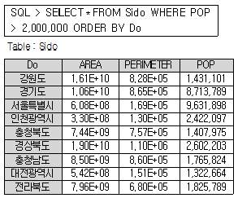
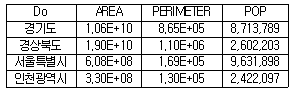
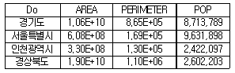
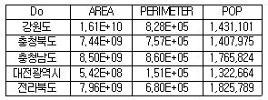
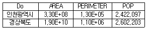
(정답률: 43%)
66. GIS에서 사용되는 벡터모델의 기본 요소가 아닌 것은?
- Grid
- Line
- Point
- Polygon
(정답률: 60%)
67. 행정구역도와 버스노선도를 합성하여 행정구역을 통과하는 버스노선을 관리하고자 할 때, 가장 적합한 분석 방법은?
- 표면분석
- 중첩분석
- 경계분석
- 근린분석
(정답률: 58%)
68. 지리정보시스템(GIS)의 주요 자료원으로 거리가 먼 것은?
- 수치지도
- 주민등록 데이터베이스
- GPS 데이터
- 현장 조사자료
(정답률: 70%)
69. 다음 중 GIS의 주요기능이 아닌 것은?
- 자료 처리
- 자료 출력
- 자료 복원
- 자료 관리
(정답률: 63%)
70. 지리정보시스템(GIS)의 자료기반구축에 대한 설명으로 틀린 것은?
- 자료 구축을 위해 각종 도면이나 대장 보고서 등을 활용할 수 있다.
- 위성영상 및 스캐닝한 도면에서 얻어진 자료를 이용하여 구축할 수 있다.
- 수치지도는 자료량이 많은 래스터 방식보다 벡터방식이 적합하다.
- 자료 구축의 해상력 측면에서는 벡터방식보다 래스터방식이 적합하다.
(정답률: 48%)
71. 지리정보시스템의 일반적인 자료처리단계를 순서대로 바르게 나열한 것은?
- 자료의 수치화 - 응용분석 - 출력 - 자료조작 및 관리
- 자료의 수치화 - 자료조작 및 관리 - 응용분석 - 출력
- 자료조작 및 관리 - 자료의 수치화 - 응용분석 - 출력
- 자료조작 및 관리 - 응용분석 - 출력 - 자료의 수치화
(정답률: 65%)
72. 아래 보기가 설명하고 있는 것은?
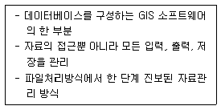
- 공간자료처리언어(SDML)
- 공간자료교환표준(SDTS)
- 의사결정지원체계
- 데이터베이스관리체계(DBMS)
(정답률: 73%)
73. 사용자가 자료를 수집하고 사용하는 데 도움을 주기 위하여 자료의 내용, 품질, 조건, 특징 등을 수록한 것으로, 정보의 이력서라 할 수 있는 것은?
- 표준코드
- 데이터 모형
- 메타데이터
- 커버리지
(정답률: 70%)
74. 보간법(interpolation)에 관한 설명으로 틀린 것은?
- 주어진 점의 표고값을 이용하여 표고값이 요구되는 점의 표고값을 추정하는 방법이다.
- 거리에 반비례해서 표고값에 가중값을 주는 보간법을 역거리가중법(IDW)이라 한다.
- 역거리가중법(IDW)은 전역적(global) 보간법이다.
- GPS로 취득한 지형자료를 이용해서 DEM을 생성할 때 사용한다.
(정답률: 50%)
75. 지리정보시스템(GIS)으로 구축한 데이터의 위치와 실제 검측한 위치가 아래 표와 같을 때 GIS 데이터의 거리 오차는?
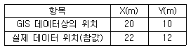
- 약 2.2m
- 약 2.8m
- 약 3.2m
- 약 3.6m
(정답률: 67%)
76. 지형을 표현하는 데 사용하는 데이터 구조가 아닌 것은?
- 음영기복도(Shaded Relief Map)
- 불규칙 삼각망(TIN)
- 수치고도모델(DEM)
- 복셀(Voxel)
(정답률: 44%)
77. 수치지도의 속성정확도 검증을 위하여 다음과 같은 오차행렬을 작성하였다. 오차행렬로부터 알 수 있는 것이 아닌 것은?
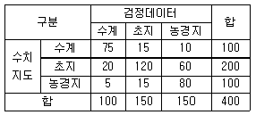
- 전체 정확도는 275/400=68.8%이다.
- 수계는 사용자 정확도와 제작자 정확도가 같다.
- 수계의 정확도가 초지의 정확도에 비해 높다.
- 농경지의 사용자 정확도는 80.0%이다.
(정답률: 63%)
78. 다음 중 토목 현장의 공사를 위한 토공량 계산, 사면안정성 분석, 경관 분석 등과 관련된 분석 기법이 아닌 것은?
- 지형 분석
- 경사 분석
- 가시선 분석
- 도시성장 패턴 분석
(정답률: 61%)
79. 지리정보시스템(GIS)의 측정 척도 중 전화번호나 주소와 같이 구별을 위한 고유번호로서 순서나 크기를 나타내지 않는 측정 척도는?
- 비율 척도
- 간격 척도
- 서열 척도
- 명목 척도
(정답률: 61%)
80. 수치지형도에 대한 설명으로 옳지 않은 것은?
- 수치지형도란 지표면상의 각종 공간정보를 일정한 축척에 따라 기호나 문자, 속성으로 표시하여 정보시스템에서 분석, 편집 및 입ㆍ출력할 수 있도록 제작된 것을 말한다.
- 수치지형도 작성이란 각종 지형공간정보를 취득하여 전산시스템에서 처리할 수 있는 형태로 제작하거나 변환하는 일련의 과정을 말한다.
- 정위치 편집이란 지리조사 및 현지측량에서 얻어진 자료를 이용하여 도화 데이터 또는 지도입력 데이터를 수정 및 보완하는 작업을 말한다.
- 구조화 편집이란 지형도상에 기본도 도곽, 도엽명, 사진도곽 및 번호를 표기하는 작업을 말한다.
(정답률: 53%)
5과목: 측량학
81. 어느 지점의 각을 8회 관측하여 평균제곱근오차 ±0.7″를 얻었다. 같은 조건으로 관측하여 ±0.3″의 평균제곱근오차를 얻기 위해서는 몇 회 측정하여야 하는가?
- 18회
- 24회
- 32회
- 44회
(정답률: 44%)
82. 거리를 측정할 때에 발생하는 오차 중에서 정오차가 아닌 것은?
- 눈금을 잘못 읽었을 때 발생하는 오차
- 표준온도와 관측 시 온도 차에 의해 발생하는 오차
- 표준줄자와의 차이에 의하여 발생하는 오차
- 줄자의 처짐(sag)으로 발생하는 오차
(정답률: 58%)
83. 트래버스 측량에서 위거오차 +0.035m, 경거오차 -0.124m이고, 전 측선의 길이는 2680m이다. 폐합비의 허용범위를 1/20,000로 할 때 오차의 처리방법은?
- 각만 재측량하여야 한다.
- 거리만 재측량하여야 한다.
- 각과 거리를 재측량하여야 한다.
- 폐합오차의 조정으로 처리한다.
(정답률: 59%)
84. 단열삼각망의 조정계산과정에 속하지 않는 조정은 무엇인가?
- 각조건 조정
- 측점조건 조정
- 변조건 조정
- 방향각 조정
(정답률: 32%)
85. 왕복관측값의 교차한계를 ±5.0mm√S로 하는 수준측량에서 8km를 왕복 관측하였다면 교차의 허용 한계는? (단, S : 관측거리(편도) km 단위)
- ±5.6mm
- ±7.0mm
- ±14.1mm
- ±20.0mm
(정답률: 42%)
86. 그림과 같은 수준측량 결과에 따른 B점의 지반고는? (단, A점의 지반고는 30m이다.)
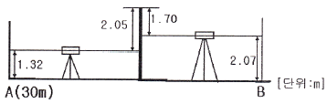
- 28.90m
- 29.60m
- 33.74m
- 37.14m
(정답률: 54%)
87. 3인(A, B, C)이 각을 관측한 결과가 아래와 같을 때 최확값은?
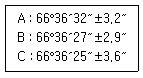
- 66°36′30″
- 66°36′28″
- 66°36′20″
- 66°36′22″
(정답률: 35%)
88. 수준측량에서 전시거리와 후시거리를 같게 하는 이유로서 가장 적당한 것은?
- 개인 습관에 대한 오차가 소거된다.
- 표척의 기울기에 대한 오차가 소거된다.
- 표척의 침하에 의한 오차가 소거된다.
- 기계오차와 지구곡률 오차가 소거된다.
(정답률: 58%)
89. 1 : 50,000 지형도에서 4% 경사의 노선을 선정하려면 등고선(주곡선) 간의 도상거리는?
- 4.0mm
- 10.0mm
- 12.5mm
- 25.0mm
(정답률: 36%)
90. 30m의 줄자로 잰 거리가 218.10m이었다. 그런데 이 줄자가 표준보다 5cm 늘어나 있는 것이었다면 실제거리는?
- 215.74m
- 217.74m
- 218.46m
- 219.46m
(정답률: 48%)
91. 평균거리 2km에 대한 삼각측량에서 시준점의 편심에 대한 영향이 11″일 경우에 이에 의한 편심거리는?
- 약 0.11m
- 약 0.22m
- 약 0.42m
- 약 0.81m
(정답률: 44%)
92. 축척 1 : 25,000 지형도상에서 2지점 간의 도상거리가 10cm이었다. 이 거리를 도상 25cm로 표현하려면 지형도의 축척은?
- 1 : 50,000
- 1 : 25,000
- 1 : 10,000
- 1 : 5,000
(정답률: 57%)
93. 하천이나 항만, 해안 등을 심천측량하고 측점에 숫자를 기입하여 그 높이를 표시하는 방법은?
- 점고법
- 음영법
- 영선법
- 등고선법
(정답률: 58%)
94. 전파거리측량기보다 광파거리측량기가 많이 이용되는 이유로 틀린 것은?
- 정확도가 높다.
- 1인 측량이 가능하다.
- 기상조건의 영향을 받지 않는다.
- 전파거리측량기에 비해 조작시간이 짧다.
(정답률: 51%)
95. 다음 중 국가기준점에 속하지 않는 것은?
- 지자기점
- 통합기준점
- 지적삼각점
- 영해기준점
(정답률: 44%)
96. 측량기기의 성능검사대상과 주기로 옳은 것은?
- 레벨 및 거리측정기 : 1년
- GPS 수신기 : 2년
- 토털 스테이션 : 3년
- 금속관로탐지기 : 4년
(정답률: 62%)
97. 측량업의 종류에 해당하지 않는 것은?
- 기본측량사업
- 공공측량업
- 연안조사측량업
- 지적측량업
(정답률: 42%)
98. 일반측량을 한 자에게 그 측량성과 및 측량기록의 사본을 제출하게 할 수 있는 경우가 아닌 것은?
- 측량의 정확도 확보
- 측량의 중복 배제
- 측량에 관한 자료의 수집ㆍ분석
- 공공측량성과의 보안 유지
(정답률: 50%)
99. 성능검사대행자에 대하여 1년 이내의 업무정지 처분을 내릴 수 있는 경우는?
- 등록사항 변경신고를 하지 아니한 경우
- 거짓이나 부정한 방법으로 성능검사를 한 경우
- 거짓이나 그 밖의 부정한 방법으로 등록을 한 경우
- 업무정지기간 중에 계속하여 성능검사 대행업무를 한 경우
(정답률: 37%)
100. 공간정보의 구축 및 관리에 관한 법률에서 정의하고 있는 용어에 대한 설명으로 옳지 않은 것은?
- “기본측량”이란 모든 측량의 기초가 되는 공간정보를 제공하기 위하여 국토교통부장관이 실시하는 측량을 말한다.
- 국가, 지방자치단체, 그 밖에 대통령령으로 정하는 기관이 관계 법령에 따른 사업 등을 시행하기 위하여 기본측량을 기초로 실시하는 측량은 “공공측량”이다.
- “수로측량”이란 해상교통안전, 해양의 보전ㆍ이용ㆍ개발, 해양관할권의 확보 및 해양재해 예방을 목적으로 하는 항로조사 및 해양지형조사를 말한다.
- “일반측량”이란 기본측량, 공공측량, 지적측량 및 수로측량 외의 측량을 말한다.
(정답률: 35%)